<!DOCTYPE html PUBLIC "-//W3C//DTD XHTML 1.0 Transitional//EN" "http://www.w3.org/TR/xhtml1/DTD/xhtml1-transitional.dtd">
<html xmlns="http://www.w3.org/1999/xhtml">
<head>
<meta name="generator" content="NanoBlogger 3.1" />
<meta name="robots" content="all" />
<meta name="revisit-after" content="31 days" />
<meta http-equiv="Content-Type" content="text/html; charset=iso-8859-1" />

<title>Kurt's Weblog: October 2006 Archives</title>

<link rel="stylesheet" href="../styles/nb_default.css" type="text/css" />
<link rel="shortcut icon" href="../images/favicon.ico" />
<link rel="alternate" type="application/rss+xml" title="RSS 2.0" href="../rss.xml" />
<link rel="alternate" type="application/rss+xml" title="RSS 1.0" href="../index.xml" />
<link rel="alternate" type="application/atom+xml" title="Atom 0.3" href="../atom.xml" />

</head>

<body>

<div id="banner">
<h1><a href="../index.html" accesskey="1">Kurt's Weblog</a></h1>
<span class="description">electronic work log</span>
</div>

<div id="content">

<div class="blog">
<div id="menu">
	<a href="../index.html">Main</a>
</div>
</div>

<div class="blog">
<div class="item">
<a id="e2006-10-30T18_35_18.txt" name="e2006-10-30T18_35_18.txt"></a>
<h2 class="date">10.30.2006 18:35</h2>
<div class="blogbody">
<h3 class="title">Trick or treat</h3>
<div class="item-description">
Something new for me tonight... at 6:15 we are out of candy for the
trick-or-treaters!  Wow!!!!  For the last 6 years, I think I have seen
a total of 10 people at the door.  Tonight had a large range of
costumes and ages, but now the front light is dark.  Sorry all!!  I
will do better next year.
</div>
</div>

<div class="posted">
<br />Posted by <span class="item-creator">Kurt</span>
| <a class="link" href="2006-10.html#e2006-10-30T18_35_18.txt">Permalink</a>

<!-- <br /><a href="archives/2006-11-01T02_23_41.html#comments">Comments</a> -->
</div>
</div>
<div class="item">
<a id="e2006-10-30T18_16_05.txt" name="e2006-10-30T18_16_05.txt"></a>
<h2 class="date">10.30.2006 18:16</h2>
<div class="blogbody">
<h3 class="title">Voidspace on Python charting programs</h3>
<div class="item-description">
<a href="http://www.voidspace.org.uk/python/weblog/arch_d7_2006_10_28.shtml#e518">Python, GUI Toolkits and Charting</a>
<br /><br />
<pre>
I'm looking to start a Python project that will involve creating
charts from data-sets.
<br /><br />
I've been wondering which GUI toolkit [1] to use and what charting
packages are available.
<br /><br />
The Python GUI toolkits I've used are Tkinter and wxPython. Tkinter is
a wrapper around Tk/Tcl, wxPython is a wrapper around the C++ library
wxWidgets.
</pre>
</div>
</div>

<div class="posted">
<br />Posted by <span class="item-creator">Kurt</span>
| <a class="link" href="2006-10.html#e2006-10-30T18_16_05.txt">Permalink</a>

<!-- <br /><a href="archives/2006-10-30T18_35_18.html#comments">Comments</a> -->
</div>
</div>
<div class="item">
<a id="e2006-10-29T11_23_54.txt" name="e2006-10-29T11_23_54.txt"></a>
<h2 class="date">10.29.2006 11:23</h2>
<div class="blogbody">
<h3 class="title">Fledermaus to Google Earth screen captures</h3>
<div class="item-description">
Here are a couple screen captures of the process of going from a
Fledermaus scene file to Google Earth overlays.  This assumes that you
have Fledermaus 6.3 or newer.
<br /><br />
First, in Fledermaus, load up the sd file of the terrain that you want
to put into Google Earth (GE).  Then use "Tools-Create Map Sheet" menu
option and save a geoTiff.
<br /><br />
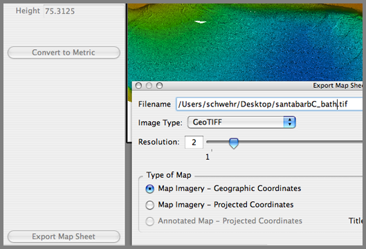
<br /><br />
Then in the IVS imageviewer program, make white be the transparent color.
<br /><br />
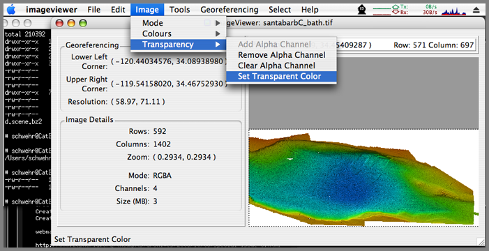
<br /><br />
Make the fuzziness be 0.  (if this were a jpg, you would need
fuziness).  Click ok.  Then save the image and keep this program running.
<br /><br />
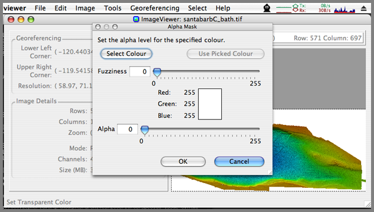
<br /><br />
Start Google Earth and add an image overlay.
<br /><br />
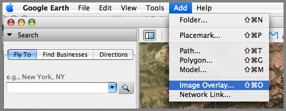
<br /><br />
Use Browse to find the image.  Then select the location tag and put in
the coordinates shown in the imageviewer program.
<br /><br />
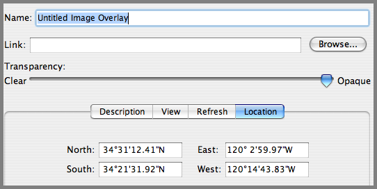
<br /><br />
And for fun, I put in my figures from the g-cubed paper that will be published in a couple weeks.
<br /><br />
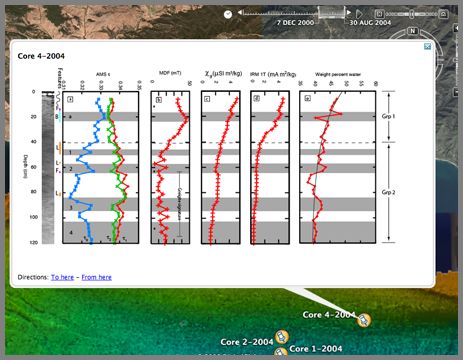
<br /><br />
That's it for now.  New Hampshire is having a wild and windy day
today.  It sounds like the house is about to take off.
</div>
</div>

<div class="posted">
<br />Posted by <span class="item-creator">Kurt</span>
| <a class="link" href="2006-10.html#e2006-10-29T11_23_54.txt">Permalink</a>

<!-- <br /><a href="archives/2006-10-30T18_16_05.html#comments">Comments</a> -->
</div>
</div>
<div class="item">
<a id="e2006-10-29T08_07_12.txt" name="e2006-10-29T08_07_12.txt"></a>
<h2 class="date">10.29.2006 08:07</h2>
<div class="blogbody">
<h3 class="title">Pathfinder photoRealVR in Stanford CS Vision class</h3>
<div class="item-description">
Antal just sent me an email about the Mars Pathfinder Photo Real VR
web pages.  He saw them used in the Stanford CS223b Computer Vision
class for Winter 2006.  Back then the web pages were on line, but for
the last 6 months (until now) the pages have been offline.  I am still
trying to get (re)organized from my move to the opposite corner of the
US.  Not everything will be in the same place.  I am working to keep
the load on <a href="http://schwehr.org/">schwehr.org</a> to a
minimum, so much of my work related material will be on the UNH
Visualization Lab web server.
<br /><br />
<a href="http://cs223b.stanford.edu/">CS223b</a> <a href="http://cs223b.stanford.edu/notes/CS%20223-B%20L1%20Intro&formation.ppt">Lecture 1 - Introduction</a>
<br /><br />
That lecture points to <a
href="http://schwehr.org/photoRealVR/example.html">http://schwehr.org/photoRealVR/example.html</a>
which I have move to <a href="http://vislab-ccom.unh.edu/~schwehr/photoRealVR/example.html">http://vislab-ccom.unh.edu/~schwehr/photoRealVR/example.html</a>
<br /><br />
SEE ALSO: <a href="http://vislab-ccom.unh.edu/~schwehr/photoRealVR/photo.html">photo.html - how it works</a>
<br /><br />

</div>
</div>

<div class="posted">
<br />Posted by <span class="item-creator">Kurt</span>
| <a class="link" href="2006-10.html#e2006-10-29T08_07_12.txt">Permalink</a>

<!-- <br /><a href="archives/2006-10-29T11_23_54.html#comments">Comments</a> -->
</div>
</div>
<div class="item">
<a id="e2006-10-28T22_49_01.txt" name="e2006-10-28T22_49_01.txt"></a>
<h2 class="date">10.28.2006 22:49</h2>
<div class="blogbody">
<h3 class="title">The google earth resume</h3>
<div class="item-description">
Back in 2002 I had a globe in my Viz competition entry.  Clicking on
the red dots popped up an OpenInventor model of that field site or a
web page.  Now I am able to do that with Google Earth (at least the
web page part).  I have created an initial version of my "Google Earth
Resume."  I did this mostly to illustrate how we as a community should
be able to access research datasets.  It gets even better with the
time control in Google Earth Beta 4.  Dragging the slider or hitting
play can show what happened when within or across research projects.
In the current version, flying in to La Jolla, CA shows an image
overlay of Pat's bathymetry with a thumb tack.  Click on the tack and
you get access to my web page for the demo and the complete Fledermaus
Scene.  I am not quite sure how to make that file download to disk and
kick off Fledermaus or iView3D, but there has to be a way to do that.
<br /><br />
<a href="http://schwehr.org/resume/schwehr-resume.kml">http://schwehr.org/resume/schwehr-resume.kml</a>
<br /><br />
<a href="../attachments/2006-10/ge-resume-lj.png">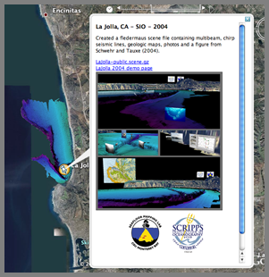</a>
</div>
</div>

<div class="posted">
<br />Posted by <span class="item-creator">Kurt</span>
| <a class="link" href="2006-10.html#e2006-10-28T22_49_01.txt">Permalink</a>

<!-- <br /><a href="archives/2006-10-29T08_07_12.html#comments">Comments</a> -->
</div>
</div>
<div class="item">
<a id="e2006-10-28T20_47_32.txt" name="e2006-10-28T20_47_32.txt"></a>
<h2 class="date">10.28.2006 20:47</h2>
<div class="blogbody">
<h3 class="title">Google earth local radar</h3>
<div class="item-description">
<a
href="http://www.gearthblog.com/blog/archives/2006/10/national_weather_ser.html">NationalWeatherService
google radar with time</a> [gearthblog] - Now has timeSpans so you can
see the radar image moving.
<br /><br />
<a href="http://www.srh.noaa.gov/ridge/kml/">http://www.srh.noaa.gov/ridge/kml/</a>
<br /><br />
Select your city and data type, then hit play.
<br /><br />
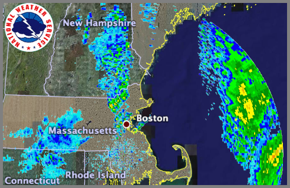
</div>
</div>

<div class="posted">
<br />Posted by <span class="item-creator">Kurt</span>
| <a class="link" href="2006-10.html#e2006-10-28T20_47_32.txt">Permalink</a>

<!-- <br /><a href="archives/2006-10-28T22_49_01.html#comments">Comments</a> -->
</div>
</div>
<div class="item">
<a id="e2006-10-28T20_28_43.txt" name="e2006-10-28T20_28_43.txt"></a>
<h2 class="date">10.28.2006 20:28</h2>
<div class="blogbody">
<h3 class="title">Halloween Music</h3>
<div class="item-description">
Not your average Halloween music...
<br /><br />
<a href="http://www.rhymetorrents.com/halloween/">Rhyme Torrents
Halloween EP</a> - The Nerdcore Hip-Hop Compilation CD Project.  Check
out the track numbers on the web page.  A mixed bag of music.
<br /><br />

</div>
</div>

<div class="posted">
<br />Posted by <span class="item-creator">Kurt</span>
| <a class="link" href="2006-10.html#e2006-10-28T20_28_43.txt">Permalink</a>

<!-- <br /><a href="archives/2006-10-28T20_47_32.html#comments">Comments</a> -->
</div>
</div>
<div class="item">
<a id="e2006-10-28T16_24_27.txt" name="e2006-10-28T16_24_27.txt"></a>
<h2 class="date">10.28.2006 16:24</h2>
<div class="blogbody">
<h3 class="title">python setuptools on IBM devworks</h3>
<div class="item-description">
<a href="http://www-128.ibm.com/developerworks/linux/library/l-cppeak3.html?ca=dgr-lnxw07PythonEggWithSetuptools">Charming Python: Hatch Python eggs with setuptools</a> - A PEAK at improved installation and package management [ibm.com]
<br /><br />
File this in the "I should really read this catagory"
</div>
</div>

<div class="posted">
<br />Posted by <span class="item-creator">Kurt</span>
| <a class="link" href="2006-10.html#e2006-10-28T16_24_27.txt">Permalink</a>

<!-- <br /><a href="archives/2006-10-28T20_28_43.html#comments">Comments</a> -->
</div>
</div>
<div class="item">
<a id="e2006-10-28T15_23_08.txt" name="e2006-10-28T15_23_08.txt"></a>
<h2 class="date">10.28.2006 15:23</h2>
<div class="blogbody">
<h3 class="title">New in JavaScript 1.7</h3>
<div class="item-description">
For a long time, I have dismissed JavaScript as a language.  But this list of features and the more places it has been showing up means that I probably should pay attention to it.
<br /><br />
<a href="http://developer.mozilla.org/en/docs/New_in_JavaScript_1.7">http://developer.mozilla.org/en/docs/New_in_JavaScript_1.7</a>
<pre>JavaScript 1.7 is a language update introducing several new features,
in particular generators, iterators, array comprehensions, let
expressions, and destructuring assignment.</pre>
</div>
</div>

<div class="posted">
<br />Posted by <span class="item-creator">Kurt</span>
| <a class="link" href="2006-10.html#e2006-10-28T15_23_08.txt">Permalink</a>

<!-- <br /><a href="archives/2006-10-28T16_24_27.html#comments">Comments</a> -->
</div>
</div>
<div class="item">
<a id="e2006-10-28T13_16_55.txt" name="e2006-10-28T13_16_55.txt"></a>
<h2 class="date">10.28.2006 13:16</h2>
<div class="blogbody">
<h3 class="title">supposed planet-wide ocean on Mars</h3>
<div class="item-description">
<a href="http://www.newscientistspace.com/article/dn10389-soil-minerals-point-to-planetwide-ocean-on-mars.html">Soil minerals point to planet-wide ocean on Mars</a>
<pre>...
Now, a new analysis of rover data suggests that the sulphates were
once dissolved in a planet-wide ocean. The study was carried out by
James Greenwood of Wesleyan University and Ruth Blake of Yale
University, both in Connecticut, US.
<br /><br />
The researchers point out that phosphates, which are also linked to
water, are also present at both sites. More importantly, the ratio of
phosphates to sulphates is about the same at both locations. They say
the most likely explanation for this is that any local variations were
smoothed out by mixing in a planet-wide ocean.
...</pre>
Apparently this was published in Geology (vol 34, p 953).
</div>
</div>

<div class="posted">
<br />Posted by <span class="item-creator">Kurt</span>
| <a class="link" href="2006-10.html#e2006-10-28T13_16_55.txt">Permalink</a>

<!-- <br /><a href="archives/2006-10-28T15_23_08.html#comments">Comments</a> -->
</div>
</div>
<div class="item">
<a id="e2006-10-27T15_52_19.txt" name="e2006-10-27T15_52_19.txt"></a>
<h2 class="date">10.27.2006 15:52</h2>
<div class="blogbody">
<h3 class="title">Many ships in Google Earth timeSpan</h3>
<div class="item-description">
Now that I have finished my talk, here is my Google Earth file for AIS
ship traffic in a small area for a couple hours.  Doing timeSpan nodes
in Google Earth is pretty easy, but I need to add some smarts to
filter out data that is not useful and is just slowing down the
rendering (like ships that do not move).
<br /><br />

<br /><br />
<a href="http://vislab-ccom.unh.edu/~schwehr/ais/google_earth/">http://vislab-ccom.unh.edu/~schwehr/ais/google_earth/</a>
<br /><br />
There are lots of other Google Earth AIS visualizations out there, but
I have not yet found one that uses time.  Here are some files that I have found.
<ul>
<li><a href="http://www.vesseltracker.com/en/Googleearth.html">vesseltracker</a> - Look for the data over in Europe.</li>
<li><a href="http://www.sailvalis.com/wordpress_1/?p=130">AIS Google Earth by Sail Valis</a> - San Francisco</li>
<li><a href="http://www.hsa.com.au/GoogleEarth/index.html">HSA ReefView</a> - Only screen shots</li>
<li><a href="http://www.justmagic.com/GM-GE.html">http://www.justmagic.com/GM-GE.html</a> - Google Ocean marine data</li>
</ul>
<br /><br />
The NASA Wallops google earth stuff looks interesting too.  The file
acts very strangely but is interesting.  <a
href="http://coastal.wff.nasa.gov/index.php?module=pagemaster&PAGE_user_op=view_page&PAGE_id=21&MMN_position=22:22">Google
Earth Data Browswer - CODAAC</a>
<br /><br />
And there is always the AIS system for Air Traffic... <a href="http://blogs.rave.ac.uk/blojsom/blog/aburt/Flying/2006/09/26/NOTAMS-and-NATS-AIS.html">NOTAMS and NATS AIS</a> - Notices to Airmen sounds like the Notices to Mariners.
</div>
</div>

<div class="posted">
<br />Posted by <span class="item-creator">Kurt</span>
| <a class="link" href="2006-10.html#e2006-10-27T15_52_19.txt">Permalink</a>

<!-- <br /><a href="archives/2006-10-28T13_16_55.html#comments">Comments</a> -->
</div>
</div>
<div class="item">
<a id="e2006-10-27T14_51_30.txt" name="e2006-10-27T14_51_30.txt"></a>
<h2 class="date">10.27.2006 14:51</h2>
<div class="blogbody">
<h3 class="title">NOAA nowCOAST</h3>
<div class="item-description">
I haven't yet dug into the NOAA nowCOAST, but it is high on the list
and a great resource.  As the tag line says:
<pre>Web Mapping Portal to Real-Time Coastal Observations 
and NOAA Forecasts</pre>
<br /><br />
I was going to include a screen shot, but it seems that I really
wedged something.  I am currently getting a whole mess of Java
exceptions.  The mistake was probably trying to resize the window to a
smaller size get a screen shot.  Whoops!  The one thing that did was
to tell me that it is using ESRI's web software.
<br /><br />
<a href="nowcoast.noaa.gov">nowCOAST</a>
</div>
</div>

<div class="posted">
<br />Posted by <span class="item-creator">Kurt</span>
| <a class="link" href="2006-10.html#e2006-10-27T14_51_30.txt">Permalink</a>

<!-- <br /><a href="archives/2006-10-27T15_52_19.html#comments">Comments</a> -->
</div>
</div>
<div class="item">
<a id="e2006-10-26T18_20_09.txt" name="e2006-10-26T18_20_09.txt"></a>
<h2 class="date">10.26.2006 18:20</h2>
<div class="blogbody">
<h3 class="title">AIS motion in google earth</h3>
<div class="item-description">
A few months ago, I got AIS data into Google Earth KML, which was
nice, but there was no way to see the motion.  GeoZui4D has had a time
interface for quite some time and seeing the ship motion is a big
queue as to what is going on.  Now that Google Earth has time in kml
2.1 with the latest Beta 4, it was time today to get AIS moving the
way it should be.  Here is my very first attempt with just one ship.
I picked the Defiant in New Jersey just south of Atlantic City.  I am
sure that my kml is not the nicest, but it works.
<br /><br />
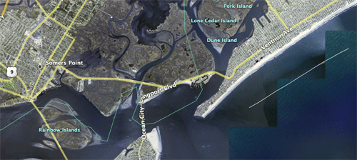
<br /><br />
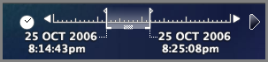
<br /><br />
<a href="../attachments/2006-10/defiant-ais.kml">defiant-ais.kml</a>
<br /><br />
I produced the above animation by doing multiple Shift-Apple-3 keys to
grab the screen, then stacked the images in photoshop as layers.  I
cropped the batch together and then exported the layers in Image
Ready as a_[0-4].gif.  Then I used image magick to make the animated gif:
<pre>convert -delay 75 -loop 0 a_?.gif google-ais-defiant.gif</pre>
</div>
</div>

<div class="posted">
<br />Posted by <span class="item-creator">Kurt</span>
| <a class="link" href="2006-10.html#e2006-10-26T18_20_09.txt">Permalink</a>

<!-- <br /><a href="archives/2006-10-27T14_51_30.html#comments">Comments</a> -->
</div>
</div>
<div class="item">
<a id="e2006-10-26T13_31_15.txt" name="e2006-10-26T13_31_15.txt"></a>
<h2 class="date">10.26.2006 13:31</h2>
<div class="blogbody">
<h3 class="title">AIS BSVDM</h3>
<div class="item-description">
I was just going back through a recent days worth of logged AIS data
and noticed that I am getting way more complaints from my python code.
Looking at the NMEA I was surprised to see BSVDM NMEA messages.  I am
accustomed to seeing AIVDM messages broadcast from remote vessels.
Googling BSVDM only got one hit which is the AIS basestation
specification.
<pre><a href="http://www.navcenter.org/marcomms/IEC/80_427e_CDV.pdf">80_427e_CDV</a>[pdf]</pre>
Skimming through that document, there are messages that start with
!BS, but I didn't find a description.  Perhaps this means "Base
Station," but it could also stand for "Bit Scrambled."  I haven't
tried to decode these since my code rejects anything that is not AIVDM
or AIVDO.  Here is an example just for reference.
<pre>
!BSVDM,1,1,,A,152w@t5P00JSDt6E7qv@0?wF0<0f,0*61,r003669717,1161821504
!BSVDM,1,1,,A,15N7`G0P00JRURdE7oVevgwH08JH,0*74,r003669717,1161821504
!BSVDM,1,1,,A,15N4He0P06JRT<TE:;v22?wH08Jt,0*2A,r003669717,1161821505
!BSVDM,1,1,,B,15N5p@0P00JRh:HE3`jI9?wL240d,0*4B,r003669717,1161821505
!BSVDM,2,1,7,A,53bNQv02<LuU0P46221A84m0E:22222222222216:0D::6b<0>PC0PCVH888,0*51,r003669717,1161821506
!BSVDM,2,2,7,A,88888888880,2*3A,r003669717,1161821506
!BSVDM,1,1,,A,15N8JePP00JR`t0E6501sOwP0D0f,0*20,r003669717,1161821507
!BSVDM,1,1,,A,15N1NJPP1=JSBH`E<cBWNwwP08LT,0*3E,r003669717,1161821508
</pre>
Something to look into if I get some more time.  And I really should
read the whole base station specification.
</div>
</div>

<div class="posted">
<br />Posted by <span class="item-creator">Kurt</span>
| <a class="link" href="2006-10.html#e2006-10-26T13_31_15.txt">Permalink</a>

<!-- <br /><a href="archives/2006-10-26T18_20_09.html#comments">Comments</a> -->
</div>
</div>
<div class="item">
<a id="e2006-10-25T15_36_25.txt" name="e2006-10-25T15_36_25.txt"></a>
<h2 class="date">10.25.2006 15:36</h2>
<div class="blogbody">
<h3 class="title">Latest update on the MER Mars rovers</h3>
<div class="item-description">
<a href="http://www.theonion.com/content/node/54360">http://www.theonion.com/content/node/54360</a>
<pre>
Mars Rover Beginning To Hate Mars
Unmanned Vehicle 'Bored Out Of Its Mind'
</pre>
Thanks to Jenna for pointing out this critical news update!
</div>
</div>

<div class="posted">
<br />Posted by <span class="item-creator">Kurt</span>
| <a class="link" href="2006-10.html#e2006-10-25T15_36_25.txt">Permalink</a>

<!-- <br /><a href="archives/2006-10-26T13_31_15.html#comments">Comments</a> -->
</div>
</div>
<div class="item">
<a id="e2006-10-25T08_33_19.txt" name="e2006-10-25T08_33_19.txt"></a>
<h2 class="date">10.25.2006 08:33</h2>
<div class="blogbody">
<h3 class="title">blog rsync</h3>
<div class="item-description">
I finally have rsync setup so that the web server is not running the
nb command (which takes quite a long time).  Here is my nb-rsync.bash script:
<pre><font color="0000ff"><strong>#!/bin/bash</strong></font>
export <font color="#2040a0">RSYNC_RSH</font>=ssh
<font color="#2040a0">OPTIONS</font>=<font color="#008000">&quot;${OPTIONS} --recursive&quot;</font>
<font color="#2040a0">OPTIONS</font>=<font color="#008000">&quot;${OPTIONS} --perms&quot;</font>
<font color="#2040a0">OPTIONS</font>=<font color="#008000">&quot;${OPTIONS} --times&quot;</font>
<font color="#2040a0">OPTIONS</font>=<font color="#008000">&quot;${OPTIONS} --cvs-exclude&quot;</font>
<font color="#2040a0">OPTIONS</font>=<font color="#008000">&quot;${OPTIONS} --exclude-from=${HOME}/projects/blog/scripts/nb-rsync.excludes&quot;</font>
<font color="#2040a0">OPTIONS</font>=<font color="#008000">&quot;${OPTIONS} --verbose&quot;</font>
<font color="#444444">#OPTIONS=&quot;${OPTIONS} --dry-run&quot;</font>
<font color="#444444">#OPTIONS=&quot;${OPTIONS} &quot;
</font>
echo calling rsync...
echo rsync ${OPTIONS}
rsync ${OPTIONS} ${HOME}/projects/blog/nb/ schwehr.org:www/blog/</pre>
And here are my excludes:
<pre>blog.conf
cache
data
templates
parts</pre>
Seems to work great!
</div>
</div>

<div class="posted">
<br />Posted by <span class="item-creator">Kurt</span>
| <a class="link" href="2006-10.html#e2006-10-25T08_33_19.txt">Permalink</a>

<!-- <br /><a href="archives/2006-10-25T15_36_25.html#comments">Comments</a> -->
</div>
</div>
<div class="item">
<a id="e2006-10-25T08_02_59.txt" name="e2006-10-25T08_02_59.txt"></a>
<h2 class="date">10.25.2006 08:02</h2>
<div class="blogbody">
<h3 class="title">Mac Software - iShowU, SOAP Client 1.0, Google SketchUp</h3>
<div class="item-description">
Couple of Mac software updates...
<br /><br />
A new version of <a href="http://sketchup.google.com/">Google
SketchUp</a> is out (5.0.305).  Is there any software out there that
can convert the SketchUp files to something else?  Did I mention that
I hate application installers?  What are they putting on my system and
where?  I much prefer applications that let me just drop the
application into /Applications.  BTW, Roland got me interested in the
x3d file format the other day.  I didn't realize that it is a
combination of XML and VRML2/95.  I have to take quick look.
<br /><br />
This next software package looks useful for some of the NOAA work I am
doing with the Coops SOAP servers.  <a
href="http://ditchnet.org/soapclient/">Soap Client 1.0</a>
<br /><br />
The last one, I am not so sure about: <a
href="http://shinywhitebox.com/">iShowU</a> I tried playing with the
last free version (1.9) and it cause the mac to kernel panic quite a
few times (usually a couple minutes after using it).  It does do a
nice job of saving the screen to a movie file.  The program is now up
to version 1.25, so maybe it won't crash you machine, but I don't
know.  I use my desktop for long term data logging, so I get really
annoyed by things that make me reboot my machine.  It doesn't help
that I have to restart the data logging code by hand right now (ugh!).
</div>
</div>

<div class="posted">
<br />Posted by <span class="item-creator">Kurt</span>
| <a class="link" href="2006-10.html#e2006-10-25T08_02_59.txt">Permalink</a>

<!-- <br /><a href="archives/2006-10-25T08_33_19.html#comments">Comments</a> -->
</div>
</div>
<div class="item">
<a id="e2006-10-24T15_31_25.txt" name="e2006-10-24T15_31_25.txt"></a>
<h2 class="date">10.24.2006 15:31</h2>
<div class="blogbody">
<h3 class="title">Great site for images of different ship types</h3>
<div class="item-description">
I just found <a
href="http://www.njscuba.net/artifacts/index.html">http://www.njscuba.net/artifacts/</a>.
This site has some nice pictures of various ship types.  For example:
<br /><br />

<br /><br />

</div>
</div>

<div class="posted">
<br />Posted by <span class="item-creator">Kurt</span>
| <a class="link" href="2006-10.html#e2006-10-24T15_31_25.txt">Permalink</a>

<!-- <br /><a href="archives/2006-10-25T08_02_59.html#comments">Comments</a> -->
</div>
</div>
<div class="item">
<a id="e2006-10-23T22_32_47.txt" name="e2006-10-23T22_32_47.txt"></a>
<h2 class="date">10.23.2006 22:32</h2>
<div class="blogbody">
<h3 class="title">Python and Mac Quartz</h3>
<div class="item-description">
<a href="http://www.macresearch.org/generating_diagrams_with_python_and_quartz">http://www.macresearch.org/generating_diagrams_with_python_and_quartz</a>
<pre>
Standard plotting and visualization packages are adequate for most
researchers, most of the time, but what if you have to follow a path
less travelled, and need diagrams that are not easily generated by
existing software? With a little Python, you can relatively easily
produce custom graphics by leveraging one of Mac OS X's great
technologies: Quartz.
</pre>
And I shoved this code into a script and it performed as advertised...
<pre>
<font color="#444444">#!/usr/bin/python</font>
<br /><br />
<strong>from</strong> <font color="#2040a0">CoreGraphics</font> <strong>import</strong> <font color="4444FF">*</font>
<strong>import</strong> <font color="#2040a0">math</font>, <font color="#2040a0">random</font>
<br /><br />
<font color="#444444"># Define the mapping between plot coordinates</font>
<font color="#444444"># and page coordinates</font>
<font color="#2040a0">xPlotRange</font> <font color="4444FF">=</font> <font color="#FF0000">5.0</font>
<font color="#2040a0">yPlotRange</font> <font color="4444FF">=</font> <font color="#FF0000">5.0</font>
<font color="#2040a0">xPageRange</font> <font color="4444FF">=</font> <font color="#FF0000">792.0</font>
<font color="#2040a0">yPageRange</font> <font color="4444FF">=</font> <font color="#FF0000">612.0</font>
<br /><br />
<font color="#444444"># Functions</font>
<font color="#2040a0">def</font> <font color="#2040a0">drawLevelTransition</font><font color="4444FF">(</font><font color="#2040a0">c</font>, <font color="#2040a0">firstLevel</font>,<font color="#2040a0">secondLevel</font><font color="4444FF">)</font><font color="4444FF">:</font>
    <font color="#444444"># Draw first level</font>
    <font color="#2040a0">c</font>.<font color="#2040a0">setLineWidth</font><font color="4444FF">(</font>.<font color="#FF0000">01</font><font color="4444FF">)</font>
    <font color="#2040a0">c</font>.<font color="#2040a0">beginPath</font><font color="4444FF">(</font><font color="4444FF">)</font>
    <font color="#2040a0">c</font>.<font color="#2040a0">moveToPoint</font><font color="4444FF">(</font><font color="#FF0000">1.0</font>,<font color="#2040a0">firstLevel</font><font color="4444FF">)</font>
    <font color="#2040a0">c</font>.<font color="#2040a0">addLineToPoint</font><font color="4444FF">(</font><font color="#FF0000">1.2</font>,<font color="#2040a0">firstLevel</font><font color="4444FF">)</font>
    <font color="#2040a0">c</font>.<font color="#2040a0">strokePath</font><font color="4444FF">(</font><font color="4444FF">)</font>
<br /><br />
    <font color="#444444"># Draw second level</font>
    <font color="#2040a0">c</font>.<font color="#2040a0">beginPath</font><font color="4444FF">(</font><font color="4444FF">)</font>
    <font color="#2040a0">c</font>.<font color="#2040a0">moveToPoint</font><font color="4444FF">(</font><font color="#FF0000">2.0</font>,<font color="#2040a0">secondLevel</font><font color="4444FF">)</font>
    <font color="#2040a0">c</font>.<font color="#2040a0">addLineToPoint</font><font color="4444FF">(</font><font color="#FF0000">2.2</font>,<font color="#2040a0">secondLevel</font><font color="4444FF">)</font>
    <font color="#2040a0">c</font>.<font color="#2040a0">strokePath</font><font color="4444FF">(</font><font color="4444FF">)</font>
<br /><br />
    <font color="#444444"># Draw dashed line between levels</font>
    <font color="#2040a0">c</font>.<font color="#2040a0">saveGState</font><font color="4444FF">(</font><font color="4444FF">)</font>
    <font color="#2040a0">c</font>.<font color="#2040a0">setLineWidth</font><font color="4444FF">(</font>.<font color="#FF0000">005</font><font color="4444FF">)</font>
    <font color="#2040a0">c</font>.<font color="#2040a0">beginPath</font><font color="4444FF">(</font><font color="4444FF">)</font>
    <font color="#2040a0">c</font>.<font color="#2040a0">moveToPoint</font><font color="4444FF">(</font><font color="#FF0000">1.2</font>,<font color="#2040a0">firstLevel</font><font color="4444FF">)</font>
    <font color="#2040a0">c</font>.<font color="#2040a0">addLineToPoint</font><font color="4444FF">(</font><font color="#FF0000">2.0</font>,<font color="#2040a0">secondLevel</font><font color="4444FF">)</font>
    <font color="#2040a0">c</font>.<font color="#2040a0">setRGBStrokeColor</font><font color="4444FF">(</font><font color="#FF0000">1</font>.,<font color="#FF0000">0</font>.,<font color="#FF0000">0</font>.,<font color="#FF0000">1.0</font><font color="4444FF">)</font>
    <font color="#2040a0">dashes</font> <font color="4444FF">=</font> <font color="#2040a0">CGFloatArray</font><font color="4444FF">(</font><font color="#FF0000">2</font><font color="4444FF">)</font>
    <font color="#2040a0">dashes</font><font color="4444FF">[</font><font color="#FF0000">0</font><font color="4444FF">]</font> <font color="4444FF">=</font> <font color="#FF0000">0.1</font>
    <font color="#2040a0">dashes</font><font color="4444FF">[</font><font color="#FF0000">1</font><font color="4444FF">]</font> <font color="4444FF">=</font> <font color="#FF0000">0.05</font>
    <font color="#2040a0">c</font>.<font color="#2040a0">setLineDash</font><font color="4444FF">(</font><font color="#FF0000">0</font>, <font color="#2040a0">dashes</font>, <font color="#FF0000">2</font><font color="4444FF">)</font>
    <font color="#2040a0">c</font>.<font color="#2040a0">strokePath</font><font color="4444FF">(</font><font color="4444FF">)</font>
    <font color="#2040a0">c</font>.<font color="#2040a0">restoreGState</font><font color="4444FF">(</font><font color="4444FF">)</font>
<br /><br />
    <font color="#444444"># Write text</font>
    <font color="#2040a0">c</font>.<font color="#2040a0">saveGState</font><font color="4444FF">(</font><font color="4444FF">)</font>
    <font color="#2040a0">c</font>.<font color="#2040a0">setRGBFillColor</font> <font color="4444FF">(</font><font color="#FF0000">0</font>,<font color="#FF0000">0</font>,<font color="#FF0000">1</font>,<font color="#FF0000">1</font><font color="4444FF">)</font>
    <font color="#2040a0">c</font>.<font color="#2040a0">selectFont</font> <font color="4444FF">(</font><font color="#008000">&quot;Helvetica&quot;</font>, <font color="#FF0000">0.07</font>, <font color="#2040a0">kCGEncodingMacRoman</font><font color="4444FF">)</font>
    <font color="#2040a0">c</font>.<font color="#2040a0">setTextPosition</font><font color="4444FF">(</font><font color="#FF0000">0.5</font>, <font color="#2040a0">firstLevel</font><font color="4444FF">)</font>
    <font color="#2040a0">c</font>.<font color="#2040a0">setTextDrawingMode</font> <font color="4444FF">(</font><font color="#2040a0">kCGTextFill</font><font color="4444FF">)</font>
    <font color="#2040a0">text</font> <font color="4444FF">=</font> <font color="#008000">&quot;Level %3.2f&quot;</font> <font color="4444FF">%</font> <font color="4444FF">(</font><font color="#2040a0">firstLevel</font><font color="4444FF">)</font>
    <font color="#2040a0">c</font>.<font color="#2040a0">showText</font> <font color="4444FF">(</font><font color="#2040a0">text</font>, <font color="#2040a0">len</font><font color="4444FF">(</font><font color="#2040a0">text</font><font color="4444FF">)</font><font color="4444FF">)</font>
    <font color="#2040a0">c</font>.<font color="#2040a0">restoreGState</font><font color="4444FF">(</font><font color="4444FF">)</font>
<br /><br />
<br /><br />
<font color="#444444"># Create a page to draw in</font>
<font color="#2040a0">pageRect</font> <font color="4444FF">=</font> <font color="#2040a0">CGRectMake</font><font color="4444FF">(</font><font color="#FF0000">0</font>, <font color="#FF0000">0</font>, <font color="#FF0000">612</font>, <font color="#FF0000">792</font><font color="4444FF">)</font>
<font color="#2040a0">c</font> <font color="4444FF">=</font> <font color="#2040a0">CGPDFContextCreateWithFilename</font> <font color="4444FF">(</font><font color="#008000">&quot;energylevels.pdf&quot;</font>, <font color="#2040a0">pageRect</font><font color="4444FF">)</font>
<font color="#2040a0">c</font>.<font color="#2040a0">beginPage</font><font color="4444FF">(</font><font color="#2040a0">pageRect</font><font color="4444FF">)</font>
<br /><br />
<font color="#444444"># Apply transform so that we can draw in the plot coordinates</font>
<font color="#2040a0">c</font>.<font color="#2040a0">scaleCTM</font><font color="4444FF">(</font><font color="#2040a0">xPageRange</font>/<font color="#2040a0">xPlotRange</font>, <font color="#2040a0">yPageRange</font>/<font color="#2040a0">yPlotRange</font><font color="4444FF">)</font>
<br /><br />
<font color="#444444"># Draw 5 random transitions for demonstration purposes</font>
<strong>for</strong> <font color="#2040a0">i</font> <strong>in</strong> <font color="#2040a0">range</font><font color="4444FF">(</font><font color="#FF0000">5</font><font color="4444FF">)</font><font color="4444FF">:</font>
    <font color="#2040a0">first</font> <font color="4444FF">=</font> <font color="#FF0000">5.0</font> <font color="4444FF">*</font> <font color="#2040a0">random</font>.<font color="#2040a0">random</font><font color="4444FF">(</font><font color="4444FF">)</font>
    <font color="#2040a0">second</font> <font color="4444FF">=</font> <font color="#FF0000">5.0</font> <font color="4444FF">*</font> <font color="#2040a0">random</font>.<font color="#2040a0">random</font><font color="4444FF">(</font><font color="4444FF">)</font>
    <font color="#2040a0">drawLevelTransition</font><font color="4444FF">(</font><font color="#2040a0">c</font>, <font color="#2040a0">first</font>, <font color="#2040a0">second</font><font color="4444FF">)</font>
<br /><br />
<font color="#444444"># Finish off</font>
<font color="#2040a0">c</font>.<font color="#2040a0">endPage</font><font color="4444FF">(</font><font color="4444FF">)</font>
</pre>
</div>
</div>

<div class="posted">
<br />Posted by <span class="item-creator">Kurt</span>
| <a class="link" href="2006-10.html#e2006-10-23T22_32_47.txt">Permalink</a>

<!-- <br /><a href="archives/2006-10-24T15_31_25.html#comments">Comments</a> -->
</div>
</div>
<div class="item">
<a id="e2006-10-23T11_56_25.txt" name="e2006-10-23T11_56_25.txt"></a>
<h2 class="date">10.23.2006 11:56</h2>
<div class="blogbody">
<h3 class="title">MacENC</h3>
<div class="item-description">
Here is an interesting little program.  <a
href="http://www.gpsnavx.com/MacENC/">MacENC</a>.  This is about $100.
It is nice to see some Electronic Navigational Chart software for the
Mac.  I will go absolutely nuts if I ever see an ECDIS based on either
Linux or Mac OSX.  It was interesting to hear at AIS06 that people are
extremely worried about internet chart updates for their ECDIS systems
because of the concern about getting viruses on critical
infrastructure machines.
<pre>
  MacENC(tm) is the professional solution for the mariner that wants to
  take the Mac aboard for real-time display of position on the vector
  format S-57/S-63 ENCs (Electronic Navigational Charts) AND raster
  format BSB and Softcharts. Plug your GPS into your Mac and watch as
  your vessel moves along in real-time, plotting a track behind and
  logging a historic position on a seamless quilted digital chart.
</pre>
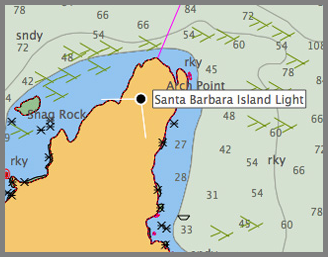
</div>
</div>

<div class="posted">
<br />Posted by <span class="item-creator">Kurt</span>
| <a class="link" href="2006-10.html#e2006-10-23T11_56_25.txt">Permalink</a>

<!-- <br /><a href="archives/2006-10-23T22_32_47.html#comments">Comments</a> -->
</div>
</div>
<div class="item">
<a id="e2006-10-23T11_40_55.txt" name="e2006-10-23T11_40_55.txt"></a>
<h2 class="date">10.23.2006 11:40</h2>
<div class="blogbody">
<h3 class="title">gengetopt fink trouble fixed</h3>
<div class="item-description">
Last month, I worked with the author of gengetopt, Lorenzo Bettini,
and we fixed the gengetopt info page trouble.  I believe the fix is in
the cvs tree, so hopefully the changes will be in there for the next release.
<br /><br />
In other software news... I've updated the fink SQLalchemy to be the
latest version.  I will be putting together a python tutorial for next
week.  And I promiss to blog more about the software development work
I have been doing lately.
<br /><br />
I still have some patchup work to do to make my blog a bit more stable
and easy to use.  I am still using nanoblogger, but am thinking about
writing my own in python with maybe some XSLT.  That development is
not likely to occur anytime soon since I have way more important code
to get out the door!
<br /><br />
Finally, a warning... you will probably be seeing posts about having a
house.  Now that I have one, it factors heavily into my brain.
Questions like "Will this be the last time I mow the lawn before
spring" suddenly become interesting to me.  Weird.
</div>
</div>

<div class="posted">
<br />Posted by <span class="item-creator">Kurt</span>
| <a class="link" href="2006-10.html#e2006-10-23T11_40_55.txt">Permalink</a>

<!-- <br /><a href="archives/2006-10-23T11_56_25.html#comments">Comments</a> -->
</div>
</div>
<div class="item">
<a id="e2006-10-22T10_33_35.txt" name="e2006-10-22T10_33_35.txt"></a>
<h2 class="date">10.22.2006 10:33</h2>
<div class="blogbody">
<h3 class="title">schwehr.org back!</h3>
<div class="item-description">
With many thanks to Alex, schwehr.org is back on the net!  I also have
a new web space for work content, which is:
<pre>
<a href="https://vislab-ccom.unh.edu/~schwehr/">https://vislab-ccom.unh.edu/~schwehr/</a>
</pre>
</div>
</div>

<div class="posted">
<br />Posted by <span class="item-creator">Kurt</span>
| <a class="link" href="2006-10.html#e2006-10-22T10_33_35.txt">Permalink</a>

<!-- <br /><a href="archives/2006-10-23T11_40_55.html#comments">Comments</a> -->
</div>
</div>
<div class="item">
<a id="e2006-10-05T16_08_31.txt" name="e2006-10-05T16_08_31.txt"></a>
<h2 class="date">10.05.2006 16:08</h2>
<div class="blogbody">
<h3 class="title">google code search</h3>
<div class="item-description">
<a
href="http://www.google.com/codesearch">http://www.google.com/codesearch<a>.
What is your favorite query/result?
</div>
</div>

<div class="posted">
<br />Posted by <span class="item-creator">Kurt</span>
| <a class="link" href="2006-10.html#e2006-10-05T16_08_31.txt">Permalink</a>

<!-- <br /><a href="archives/2006-10-22T10_33_35.html#comments">Comments</a> -->
</div>
</div>
<div class="item">
<a id="e2006-10-03T14_50_58.txt" name="e2006-10-03T14_50_58.txt"></a>
<h2 class="date">10.03.2006 14:50</h2>
<div class="blogbody">
<h3 class="title">genargs first release - 0.1.0</h3>
<div class="item-description">
I just kicked out the first public release of genargs... version
0.1.0.  I hope people find it useful.  There is still much that could
be improved and added to the code, but the basics are there.  Next I
need to integrate it into the project that originally caused me to
start working on it.  This release URL will probably change in the future.
<br /><br />
<a href="http://xenon.stanford.edu/~schwehr/genargs-py-0.1.0.tar.bz2">http://xenon.stanford.edu/~schwehr/genargs-py-0.1.0.tar.bz2</a>
</div>
</div>

<div class="posted">
<br />Posted by <span class="item-creator">Kurt</span>
| <a class="link" href="2006-10.html#e2006-10-03T14_50_58.txt">Permalink</a>

<!-- <br /><a href="archives/2006-10-05T16_08_31.html#comments">Comments</a> -->
</div>
</div>
<div class="item">
<a id="e2006-10-03T06_12_49.txt" name="e2006-10-03T06_12_49.txt"></a>
<h2 class="date">10.03.2006 06:12</h2>
<div class="blogbody">
<h3 class="title">Mac OSX matlab GUI</h3>
<div class="item-description">
So I still do not have matlab installed on my mac, but other people in
the lab do.  So this might be of use to them.
<br /><br />
<a href="http://www.macresearch.org/new_gui_for_matlab">New Gui for Matlab</a> [macresearch.org]
</div>
</div>

<div class="posted">
<br />Posted by <span class="item-creator">Kurt</span>
| <a class="link" href="2006-10.html#e2006-10-03T06_12_49.txt">Permalink</a>

<!-- <br /><a href="archives/2006-10-03T14_50_58.html#comments">Comments</a> -->
</div>
</div>
<div class="item">
<a id="e2006-10-02T09_41_30.txt" name="e2006-10-02T09_41_30.txt"></a>
<h2 class="date">10.02.2006 09:41</h2>
<div class="blogbody">
<h3 class="title">wired on web journals</h3>
<div class="item-description">
<a href="http://www.wired.com/news/wireservice/0,71886-0.html">Web Journals Take On Peer Review</a> [wires/AP]
<pre>AP...
LOS ANGELES -- Scientists frustrated by the iron grip that academic
journals hold over their research can now pursue another path to fame
by taking their research straight to the public online.
<br /><br />
Instead of having a group of hand-picked scholars review research in
secret before publication, a growing number of internet-based journals
are publishing studies with little or no scrutiny by the authors'
peers. It's then up to rank-and-file researchers to debate the value
of the work in cyberspace.
<br /><br />
The web journals are threatening to turn the traditional peer-review
system on its head. Peer review for decades has been the established
way to pick apart research before it's made public.
<br /><br />
Next month, the San Francisco-based nonprofit Public Library of
Science will launch its first open peer-reviewed journal called PLoS
ONE, focusing on science and medicine. Like its sister publications,
it will make research articles available for free online by charging
authors to publish.
...
</pre>
</div>
</div>

<div class="posted">
<br />Posted by <span class="item-creator">Kurt</span>
| <a class="link" href="2006-10.html#e2006-10-02T09_41_30.txt">Permalink</a>

<!-- <br /><a href="archives/2006-10-03T06_12_49.html#comments">Comments</a> -->
</div>
</div>
</div>

</div>

<div id="links">

<div class="calendar">
<table border="0" cellspacing="4" cellpadding="0" summary="Calendar with links to days with entries">
<caption class="calendarhead">October 2006</caption>
<tr>
<th align="center"><span class="calendarday">Su</span></th>
<th align="center"><span class="calendarday">Mo</span></th>
<th align="center"><span class="calendarday">Tu</span></th>
<th align="center"><span class="calendarday">We</span></th>
<th align="center"><span class="calendarday">Th</span></th>
<th align="center"><span class="calendarday">Fr</span></th>
<th align="center"><span class="calendarday">Sa</span></th>
</tr>
<tr>
             
<td align="center"><span class="calendar">1</span></td>
<td align="center"><span class="calendar"><a href="2006-10.html#e2006-10-02T09_41_30.txt">2</a></span></td>
<td align="center"><span class="calendar"><a href="2006-10.html#e2006-10-03T14_50_58.txt">3</a></span></td>
<td align="center"><span class="calendar">4</span></td>
<td align="center"><span class="calendar"><a href="2006-10.html#e2006-10-05T16_08_31.txt">5</a></span></td>
<td align="center"><span class="calendar">6</span></td>
<td align="center"><span class="calendar">7</span></td>
</tr>
<tr>
        
<td align="center"><span class="calendar">8</span></td>
<td align="center"><span class="calendar">9</span></td>
<td align="center"><span class="calendar">10</span></td>
<td align="center"><span class="calendar">11</span></td>
<td align="center"><span class="calendar">12</span></td>
<td align="center"><span class="calendar">13</span></td>
<td align="center"><span class="calendar">14</span></td>
</tr>
<tr>
      
<td align="center"><span class="calendar">15</span></td>
<td align="center"><span class="calendar">16</span></td>
<td align="center"><span class="calendar">17</span></td>
<td align="center"><span class="calendar">18</span></td>
<td align="center"><span class="calendar">19</span></td>
<td align="center"><span class="calendar">20</span></td>
<td align="center"><span class="calendar">21</span></td>
</tr>
<tr>
      
<td align="center"><span class="calendar"><a href="2006-10.html#e2006-10-22T10_33_35.txt">22</a></span></td>
<td align="center"><span class="calendar"><a href="2006-10.html#e2006-10-23T22_32_47.txt">23</a></span></td>
<td align="center"><span class="calendar"><a href="2006-10.html#e2006-10-24T15_31_25.txt">24</a></span></td>
<td align="center"><span class="calendar"><a href="2006-10.html#e2006-10-25T15_36_25.txt">25</a></span></td>
<td align="center"><span class="calendar"><a href="2006-10.html#e2006-10-26T18_20_09.txt">26</a></span></td>
<td align="center"><span class="calendar"><a href="2006-10.html#e2006-10-27T15_52_19.txt">27</a></span></td>
<td align="center"><span class="calendar"><a href="2006-10.html#e2006-10-28T22_49_01.txt">28</a></span></td>
</tr>
<tr>
  
<td align="center"><span class="calendar"><a href="2006-10.html#e2006-10-29T11_23_54.txt">29</a></span></td>
<td align="center"><span class="calendar"><a href="2006-10.html#e2006-10-30T18_35_18.txt">30</a></span></td>
<td align="center"><span class="calendar">31</span></td>
</tr>
</table>
</div>

</div>

<br clear="all" />

</body>
</html>
